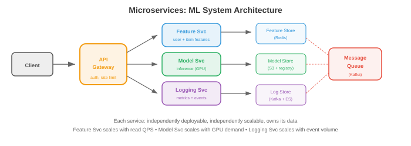

Large Scale Infrastructure¶
Building systems that serve millions of users requires more than a single server. This file covers scalability patterns, distributed systems fundamentals, microservices, data pipelines, database scaling, search and vector systems, observability, reliability engineering, and CI/CD
- A model serving 1 request per second can run on a laptop. Serving 100,000 requests per second with 99.9% availability requires distributed systems, automated failover, and carefully designed data pipelines. This file covers the patterns that bridge that gap.
Scalability¶
-
Vertical scaling (scale up): get a bigger machine. More CPU, more RAM, bigger GPU. Simple but has hard limits (the biggest available machine) and a single point of failure.
-
Horizontal scaling (scale out): add more machines. Each handles a fraction of the traffic. No single-machine limit, but requires: load balancing (file 01), data partitioning, and handling distributed state.
-
Stateless services are horizontally scalable by default. Add more instances behind a load balancer. A model inference server that loads weights at startup and processes requests independently is stateless — any instance can handle any request.
-
Stateful services (databases, KV-cache, feature stores) are harder to scale. The state must be partitioned across machines (sharding, file 01) and replicated for fault tolerance.
-
The scalability equation: for a system with \(n\) servers:
- Ideal: throughput scales linearly (\(n\) servers → \(n\times\) throughput).
- Actual: overhead from coordination, load balancing, and data transfer means throughput scales sub-linearly. Amdahl's law (chapter 13) applies: the serial fraction (shared state, coordination) limits the speedup.
Distributed Systems¶
-
A distributed system is a group of machines that coordinate to provide a service. The fundamental challenges:
-
Network partitions: machines cannot always communicate. A network cable is cut, a switch fails, a data centre loses power. The system must handle partial failures.
-
Clock skew: machines have different clocks. "Event A happened at 10:00:01 on machine 1" and "Event B happened at 10:00:01 on machine 2" does not mean they happened simultaneously. Logical clocks (Lamport timestamps, vector clocks) establish ordering without relying on physical clocks.
-
Consensus: how do multiple machines agree on a value (e.g., who is the leader)? Raft is the standard consensus algorithm. A cluster of nodes elects a leader. The leader handles all writes. If the leader fails, the remaining nodes elect a new leader. Requires a majority (3 out of 5 nodes) to operate, so it tolerates \(\lfloor(n-1)/2\rfloor\) failures.
-
Distributed locks: ensure only one machine performs a critical operation. Redlock (Redis-based) acquires locks across multiple Redis instances. If a majority of instances grant the lock, it is acquired. Used for: preventing duplicate model deployments, ensuring only one training job writes to the checkpoint.
Microservices¶

- Microservices decompose a system into small, independently deployable services. Each service owns one domain:
┌─────────────┐ ┌──────────────┐ ┌─────────────┐
│ API Gateway │→ │ Feature Svc │→ │ Feature DB │
└─────────────┘ └──────────────┘ └─────────────┘
│
├────────→ ┌──────────────┐ ┌─────────────┐
│ │ Model Svc │→ │ Model Store │
│ └──────────────┘ └─────────────┘
│
└────────→ ┌──────────────┐ ┌─────────────┐
│ Logging Svc │→ │ Log Store │
└──────────────┘ └─────────────┘
-
Advantages: independent deployment (update the model service without touching the feature service), independent scaling (scale model servers based on request load, feature servers based on feature store read rate), technology freedom (model service in Python, feature service in Go).
-
Disadvantages: network overhead (every service call is a network round trip), complexity (debugging spans multiple services), data consistency (no cross-service transactions).
-
Service discovery: how does the API gateway find the model service? Options: DNS-based (each service registers a DNS name), K8s services (built-in), or a service registry (Consul, Eureka).
-
Saga pattern: for operations spanning multiple services (create user + allocate resources + send welcome email), use a saga: a sequence of local transactions with compensating actions if any step fails.
Data Pipelines¶
- ML systems consume enormous amounts of data. Data pipelines move, transform, and serve this data:
Batch Processing¶
-
Process large volumes of data at regular intervals (hourly, daily).
-
MapReduce: the original batch paradigm. Map (transform each record independently) → Shuffle (group by key) → Reduce (aggregate per group). Conceptually simple but verbose to implement.
-
Apache Spark: the modern batch engine. In-memory processing (100x faster than MapReduce for iterative algorithms). Supports SQL, DataFrames, and ML pipelines. The standard for feature engineering at scale.
-
Example: compute user features for a recommendation system. Input: 1B user activity events from the last 30 days. Output: 100M user feature vectors. Run daily as a Spark job, output to the feature store.
Stream Processing¶
-
Process data in real-time as it arrives (sub-second latency).
-
Apache Flink: the leading stream processing engine. Exactly-once processing, event-time handling (process events by when they happened, not when they arrived), windowing (tumbling, sliding, session windows).
-
Kafka Streams: lightweight stream processing built into Kafka. Good for simpler transformations (filtering, aggregation) without deploying a separate cluster.
-
Example: real-time fraud detection. Each credit card transaction is a Kafka event. A Flink job computes running statistics (transaction frequency, location changes) and flags anomalies within 100ms.
Lambda Architecture¶
-
Combine batch and stream processing. The batch layer provides accurate, comprehensive results (but with delay). The speed layer provides approximate, real-time results. A serving layer merges both.
-
In practice, many teams now use the Kappa architecture: stream processing only, treating the stream as the source of truth. The stream is replayable (Kafka retains events), so batch can be simulated by replaying the stream.
ML Training Infrastructure¶
- Training a frontier model (100B+ parameters) is a large-scale infrastructure problem: thousands of GPUs running for months, consuming megawatts of power, generating petabytes of data, and costing tens of millions of dollars. The infrastructure determines whether training succeeds or fails.
GPU Clusters¶
- A training cluster is a collection of GPU servers connected by high-speed networks. Key components:

-
GPU servers (nodes): each server has 4-8 GPUs. A typical configuration: 8 × H100 GPUs, 2 × AMD EPYC CPUs, 2 TB RAM, 30 TB NVMe SSD. The GPUs within a node are connected by NVLink (900 GB/s per GPU on H100), which is 30x faster than PCIe.
-
Cluster sizes: a small training cluster has 64-256 GPUs (8-32 nodes). A frontier model training cluster has 4,000-32,000 GPUs (500-4000 nodes). Meta's Llama 3 used 16,384 H100 GPUs. Google trains on TPU pods with 8,000+ chips.
-
Back-of-envelope: training a 70B model requires ~\(2M in compute. Training a 400B+ frontier model requires ~\)50-100M. The cluster hardware itself costs ~\(500M-\)1B at H100 prices ($30K per GPU × 16,000 GPUs = $480M).
Networking Topology¶
-
The network between GPU nodes is the most critical infrastructure component. If GPUs cannot exchange gradients fast enough, they sit idle waiting for communication to complete.
-
InfiniBand is the standard for GPU cluster networking. NVIDIA's Quantum-2 InfiniBand provides 400 Gb/s per port. Each node typically has 8 InfiniBand ports (one per GPU), giving 400 GB/s total bisection bandwidth per node.
-
RDMA (Remote Direct Memory Access): InfiniBand supports RDMA, which transfers data directly between GPU memory on different nodes without involving the CPU. This reduces latency from ~100μs (TCP) to ~1μs and is essential for efficient gradient all-reduce (chapter 6).
-
Network topology matters: a fat tree (Clos network) provides full bisection bandwidth (any GPU can communicate with any other at full speed). Cheaper topologies (rail-optimised, 3D torus) provide less bandwidth but cost less. The topology must match the parallelism strategy:
- Data parallelism: all-reduce across all GPUs → needs high bisection bandwidth (fat tree).
- Tensor parallelism: communication within a node → NVLink handles this (no network needed).
- Pipeline parallelism: communication between adjacent pipeline stages → needs bandwidth only between specific node pairs (rail-optimised is fine).
-
Ethernet alternatives: RoCE v2 (RDMA over Converged Ethernet) provides RDMA over standard Ethernet infrastructure. Cheaper than InfiniBand but with higher latency and more congestion. Google uses RoCE for some TPU pod networks. Ultra Ethernet Consortium is developing lossless Ethernet for AI workloads.
Storage for Training¶
-
Training requires three storage tiers:
-
Dataset storage: the training corpus (1-100 TB of text, or petabytes of multimodal data). Stored in distributed file systems or object storage. Must support high-throughput sequential reads (the data loader reads data in large batches). Lustre and GPFS are common HPC file systems; cloud alternatives include FSx for Lustre (AWS) and Filestore (GCP).
-
Checkpoint storage: training state (model weights + optimiser state + scheduler state) saved periodically. For a 70B model in mixed precision with Adam optimiser: ~560 GB per checkpoint (70B × 4 bytes × 2 for optimiser). Saving hourly for a 3-month run = ~2000 checkpoints = 1.1 PB. In practice, only the latest N checkpoints are kept, and old ones are deleted. Must be fast enough that checkpointing does not significantly slow training.
-
Logging and metrics: experiment tracking data (loss curves, learning rate schedules, gradient norms). Relatively small but must be written in real-time. W&B, MLflow, or TensorBoard handle this.
-
-
The storage bottleneck: a 16,000-GPU cluster loading a training batch needs to read ~100 GB/s of data continuously. If the file system cannot sustain this throughput, GPUs sit idle waiting for data. Data pipeline optimisation (prefetching, caching, format optimisation using WebDataset or Mosaic Streaming) is critical.
Job Scheduling¶
-
A GPU cluster serves multiple teams and projects. A job scheduler allocates GPUs to training jobs:
-
SLURM: the standard HPC job scheduler. Users submit jobs specifying GPU count, memory, and time limit. SLURM allocates resources and manages the queue. Supports priority-based scheduling, preemption, and fair-share allocation between teams.
-
Kubernetes with GPU scheduling (chapter 18 file 02): cloud-native approach. K8s GPU device plugins expose GPUs as schedulable resources. Volcano and Run:ai add ML-specific scheduling features: gang scheduling (allocate all GPUs for a job at once, not one at a time), priority queues, and GPU time-sharing.
-
Scheduling challenges:
- Fragmentation: a cluster with 1000 GPUs might have 200 free, but spread across 50 nodes (4 free per node). A job needing 128 contiguous GPUs cannot run, even though there are enough total GPUs. Defragmentation (migrating jobs to consolidate free GPUs) or topology-aware scheduling (allocate GPUs that are well-connected) address this.
- Priority and preemption: urgent experiments should preempt lower-priority jobs. But preempting a training job that has been running for 2 days wastes the compute. The scheduler must balance priority with efficiency.
- Fair share: teams should get their allocated fraction of compute over time, even if a team submits more jobs than its share.
Fault Tolerance¶
-
At the scale of thousands of GPUs running for months, hardware failures are not exceptional — they are routine. Mean time between failures for a 16,000-GPU cluster is measured in hours, not months.
-
Common failures: GPU memory errors (ECC-correctable and uncorrectable), NVLink failures (GPU-to-GPU communication within a node), InfiniBand link failures (node-to-node communication), node crashes (kernel panic, PSU failure), and storage failures (disk or controller failure).
-
Checkpointing is the primary defence. Save the full training state (model, optimiser, data loader position) every N steps. On failure: identify the failed node, replace or remove it, restart training from the latest checkpoint. The cost of a failure is the compute between the last checkpoint and the failure.
-
Checkpoint frequency tradeoff: frequent checkpoints (every 10 minutes) waste less compute on failure but slow down training (checkpointing 560 GB takes time). Infrequent checkpoints (every 2 hours) are faster but waste up to 2 hours of compute on failure. Most teams checkpoint every 20-60 minutes.
-
Elastic training: modern frameworks (PyTorch Elastic, DeepSpeed) support resizing the training run without restarting. If 2 nodes fail out of 500, training continues with 498 nodes. The failed nodes are replaced, and training automatically incorporates them when they come back online.
-
Health monitoring: continuous monitoring of all GPUs (temperature, memory errors, compute throughput), network links (packet loss, latency), and storage (throughput, error rates). Automatic alerting on anomalies. Some clusters run periodic GPU health checks (a short computation test) to proactively identify degrading hardware before it fails.
-
At scale: training Meta's Llama 3 (16,384 H100s, 54 days) experienced ~466 job interruptions. Effective training time was only ~90% of wall-clock time — 10% was lost to failures and recovery. The infrastructure to achieve 90% (rather than 50% or 70%) is what separates organisations that can train frontier models from those that cannot.
Cost and Efficiency¶
- Training infrastructure cost is dominated by GPU hours:
| Component | % of Total Cost |
|---|---|
| GPU compute | 70-80% |
| Networking (InfiniBand) | 10-15% |
| Storage | 5-10% |
| Cooling and power | 5-10% |
-
GPU utilisation (Model FLOPs Utilisation, MFU) measures what fraction of the GPU's theoretical peak performance is actually used for useful computation. Peak H100 is 989 TFLOPS (FP8). Achieving 40-50% MFU is good; 50-60% is excellent. The gap is due to: communication overhead (all-reduce, pipeline bubbles), memory bandwidth limitations, and idle time during checkpointing and data loading.
-
Improving MFU: overlap computation and communication (chapter 6), use efficient attention (Flash Attention, chapter 16), optimise data loading (prevent GPU starvation), reduce checkpoint overhead (async checkpointing, checkpoint to fast NVMe first, then background-copy to persistent storage).
-
Build vs buy: at small scale (<256 GPUs), cloud is cheaper (no upfront cost, pay per hour). At large scale (>1000 GPUs, sustained use for 6+ months), owning hardware is cheaper (~2-3x lower TCO over 3 years). Most AI companies use a mix: owned clusters for sustained training, cloud for burst capacity and experimentation.
Database Scaling¶
-
Read replicas: route read queries to replicas of the primary database. The primary handles writes, replicas handle reads. Since most workloads are read-heavy (95%+ reads), this scales read throughput linearly with the number of replicas.
-
Partitioning (sharding, from file 01): split data across multiple databases. Each partition is independent, enabling parallel reads and writes. The challenge is cross-partition queries (join data from different shards).
-
Connection pooling: databases have limited connection capacity. A connection pool (PgBouncer for PostgreSQL) reuses connections across requests, preventing connection exhaustion when hundreds of service instances each try to connect.
Search and Vector Systems¶
Text Search¶
-
Inverted index: the foundation of text search. For each word, store a list of documents containing that word. A query intersects the lists for each query word. Elasticsearch is the standard: distributed, real-time, supports full-text search, aggregations, and geospatial queries.
-
BM25: the standard text retrieval scoring function. Scores documents by term frequency, inverse document frequency, and document length normalisation. Simple but effective — still competitive with neural methods for keyword-heavy queries.
Vector Search¶
-
Vector databases store embeddings (high-dimensional vectors) and support fast approximate nearest neighbour (ANN) search. Given a query embedding, find the \(k\) most similar stored embeddings.
-
FAISS (Facebook AI Similarity Search): a library (not a database) for ANN search. Supports multiple index types:
- Flat: exact search, \(O(n)\). Used for small datasets or as ground truth.
- IVF (Inverted File): partition vectors into clusters, search only the nearest clusters. \(O(n/k)\) per query.
- HNSW (Hierarchical Navigable Small World): graph-based. Build a hierarchical graph, navigate from coarse to fine. Extremely fast and accurate, the default choice for most applications.
- Product Quantisation (PQ): compress vectors into compact codes for memory-efficient search. Trade accuracy for memory.
-
Managed vector databases: Pinecone, Weaviate, Milvus, Qdrant. They handle scaling, replication, and real-time updates that FAISS does not.
-
For RAG (Retrieval-Augmented Generation): user query → embed with a text encoder → search the vector database for relevant documents → prepend retrieved documents to the LLM prompt. The quality of the retrieval directly determines the quality of the LLM's response.
Observability¶
- Observability is the ability to understand what is happening inside your system from its external outputs. Three pillars:
Logging¶
-
Structured logs (JSON) are searchable and parseable. Unstructured logs ("ERROR: something failed") are not. Always log: timestamp, service name, request ID (for tracing across services), severity, and the relevant context.
-
ELK stack (Elasticsearch, Logstash, Kibana): the standard logging pipeline. Logstash collects and transforms logs, Elasticsearch indexes them, Kibana visualises and searches.
Metrics¶
-
Metrics are numerical measurements over time: request rate, error rate, latency percentiles, GPU utilisation, queue depth. Prometheus scrapes metrics from services; Grafana visualises them in dashboards with alerting.
-
The RED method for services: Rate (requests/second), Errors (error rate), Duration (latency). Monitor these for every service.
-
The USE method for resources: Utilisation (% in use), Saturation (queue depth), Errors. Monitor these for every resource (CPU, GPU, memory, disk, network).
Tracing¶
-
Distributed tracing follows a single request across multiple services. A user request hits the API gateway → feature service → model service → postprocessing. A trace records the timing of each hop, showing where latency is spent.
-
OpenTelemetry: the open standard for traces, metrics, and logs. Instrument your code once, export to any backend (Jaeger, Zipkin, Datadog).
Reliability¶
-
SLO (Service Level Objective): the target reliability. "99.9% of requests complete in <200ms." This gives a concrete error budget: 0.1% of requests (about 43 minutes per month) can be slow or fail.
-
SLI (Service Level Indicator): the measurement. "The 99th percentile latency over the last 5 minutes."
-
SLA (Service Level Agreement): the contractual promise with consequences. "If availability drops below 99.95%, the customer gets a credit."
-
Error budgets: if your SLO is 99.9% and you are at 99.99%, you have budget for risky changes (deploy a new model, migrate databases). If you are at 99.85%, freeze all changes and focus on reliability. Error budgets turn reliability from an abstract goal into a measurable resource.
-
Chaos engineering: deliberately inject failures (kill a server, add network latency, corrupt data) to test whether your system handles them correctly. Netflix's Chaos Monkey randomly terminates production instances. If the system stays up, it is resilient. If it falls over, you found a bug before your users did.
CI/CD¶
-
Continuous Integration: automatically build and test every code change. Every push triggers: lint, type check, unit tests, integration tests. If any fail, the change is rejected. This catches bugs before they reach production.
-
Continuous Deployment: automatically deploy changes that pass CI. Deployment strategies:
-
Blue-green: run two identical environments (blue = current, green = new). Switch traffic from blue to green instantly. If green fails, switch back to blue (instant rollback).
-
Canary: route a small fraction of traffic (1-5%) to the new version. Monitor for errors. Gradually increase traffic if metrics look good. This limits the blast radius of a bad deployment.
-
Feature flags: deploy new code but hide it behind a flag. Enable the flag for a subset of users (internal testers, then beta users, then everyone). Decouple deployment (code is live) from release (users see the feature).
-
-
For ML: CI/CD includes model-specific steps. A model change triggers: unit tests (shape tests, gradient checks), evaluation on a held-out set (accuracy must not regress), shadow deployment (run the new model alongside the old one, compare outputs), and gradual rollout (canary from 1% → 100%).